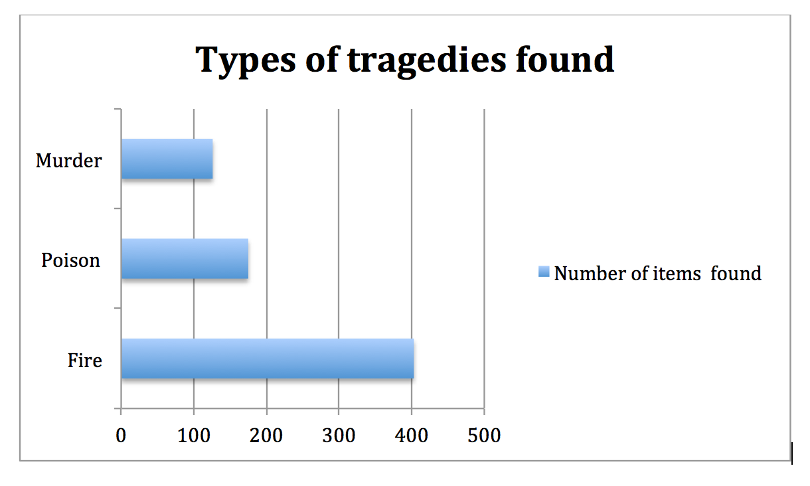

Tragic Events in 1905
Throughout the Egyptian Gazette Newspaper, tons of catastrophic events were discussed. As I read, I found it interesting how tragic events were described in such different ways than they would be in today’s world. From murders to fires, the Egyptian Gazette covers them all. I would like to focus my attention on the events that occurred within 1905 in Cairo, Egypt that left astonishing and tragic results. It is interesting to me to see how the society went about these events and how the reactions after such an extreme event took place. I would also like to look at how the society dealt with these tragic events that occurred. In today’s world, when a murder or fire takes place, society freaks out. It is interesting to see that in past years, the year 1905 for example, some events were not as tremendous as they would be in the eyes of people today.
Word searched|Number of items found|Descriptions Fire|403|Hotels, homes, buildings Poison|175|Dogs, people, many murders Murder|126|From poison, knives, etc. Knives|13|Murder, suicide, etc. Death|60|Many murders, advertisements

I began my search by using key words to help my search results become clear and efficient. I queried the Egyptian Gazette by using specific key words. First I focused my attention on fires and used the search tool //div[@type="item"][contains( 'insertword')] to find specific results. I first searched the word fire and received four hundred and three results. For example, I got a result of the Pallada that was caught on fire. It was interesting to read on, as I learned that the Russians blew up the Sevastopol. It was similar to fire tragedies in today’s world, as many people were left wounded. It was a tragic episode and 15,000 people were left sick or wounded by the fire. Another episode that was discussed was a fire that broke out in a grocery store from a pack of matches. What I find interesting is that in today’s world cameras and employees have a code that must be accepted in stores so issues like this does not take place. I believe that since this event occurred over one hundred years ago, groceries and other stores did not have this specific policy. On December 28, 1905, using the item ‘fire’, I found a div about a hotel that was burned down. This incident was very common among the people of Cairo, Egypt. Also, many fire incidents happened to occur in homes, showing that people did not take much caution and fire departments were not as evident as in today’s century. I found another interesting story. The story described a native girl of six years of age whom was burned to death. I found this part of the article interesting because one, why was a child holding a candle, and two why would no one put the fire out? I am engaged by this concept, as this tragedy leads me to think that maybe at this point in time, parenting was not evident within this century.
Using the key word ‘fire’ made me come across other tragic episodes, leading me to use them as my quarry item word. For example, I came across a tragic event of dogs that were being poisoned and killed. This article really caught my attention, as it proved the obvious different time in century. In today’s 21st century, a person would not be allowed to just poison a dog because they were astray on the streets. This is why today we have pet shelters and the humane society. Not only, but this article then led me to use ‘poison’ as another search key word. When I used the key word ‘poison’ I got one hundred and seventy five results. Therefore, we must keep in mind that although one hundred and seventy results show, only a few are relevant to tragedy related articles. A lot of the results were ads that promoted medicines. These were not prominent to the search of poison being a key factor of tragedies that occurred.
Murder, a huge crime committed among people of the 21st century, was evident in 1905 as well. By using the search tool //div[@type="item"][contains(., 'murder')], I got one hundred and twenty six results back. A story was exposed on January fourth 1905 of a man who murdered two people. After not being paid money, Keneh Markaz murdered his uncle and aunt. This crime was very similar to crimes that happen around the world on the daily. It is sad but true, that people must have had the same mental issues in the 19th century as they currently have in today’s world. This being said, a very strange story was found using the word ‘murder’. As I was looking through the divs, I came across a news story that explained a murder that occurred at a bar in Alexandria. What I found interesting was the fact that the murderer went and just stabbed the boys without any worry or fear. I feel like in todays world, murders take place with a scheme, plan, and in a private place. What I also found astonishing was that the news story did not describe any thing about what happened to the man that murdered the two boys. This leads me to believe that these things happen casually and is not taken large regard of.
The Egyptian Gazette illustrated stories and news articles of many different tragedies. What I found astonishing is that most articles that had the key word ‘tragedy’, which was found by the search //div[@type="item"][contains(., 'murder')], described interesting circumstances. For example, only a handful of murder stories were classified as a ‘tragedy’ in the Egyptian Gazette newspaper. The tragedies the newspaper described were stories such as government or money related issues. This informs me that the 1905 society of Egypt focused highly on governmental issues. This being said, a story of a murder was exposed as a tragedy. The story focused on a man in Keneh who wanted to kill his family with poison. He proposed the murder of his three cousins by putting the poison into their fruits. This story conveys to me how easily tangible poisons must be for residents residing in Cairo, Egypt. People in our country do not have the ability to keep poisons in their households or tangible to any human. People must have permission to have possessions of poisons. Due to many articles in the Egyptian Gazette newspaper, people must have been given permission to have possession of poisons. I find it very interesting how newspaper articles describe events that occurred but do not touch on how illegal having possession of poison could be. They casually describe the circumstance and casually describe the murder dealt with poison. While looking through the searches, I came across a very interesting story that describes the similarity of today’s world and the 19th century world. A man was killed for money reasons and left inside a house. The reason that neighbors and people of the city found out was because the man’s dog was taken from the house but ran back in search of his owner. This story really grasped my attention because it was very similar to cases that occur on the daily. Many people think that murdering someone in a home is a wise thing to do, but do not realize that anyone and everyone will eventually find out. It also relates to the companionship that pets have with their owners. No matter what time period we are in, dog and man will always be a best friend.
The Egyptian Gazette was a perfect depiction of the way society in Cairo, Egypt viewed tragedies. After reading through the different news articles, I found it tremendously thought-provoking how different people allocated with crimes and tragic events. Many tragedies resulted from different living styles and society trends compared with those of today’s century and country. Americans who perform criminal acts are punished by the government and charged with specific charges in today’s world. Therefore, after reading, this newspaper, I observed that many charges and assaults were not put against criminals. Something to think about could be possibly the fact that the journalist did not add this into the specific stories. Acts of jail time and charges could have existed, but it is a possibility that the Egyptian Gazette did not touch on these details. Also, while reading the Egyptian Gazette newspaper, I came across issues. One issue while observing the newspaper could be due to my chosen words for search results. Although I used a few specific words detailed to tragedies, it is a possibility that people could have spelt the words wrong, or the search engine did not find the specific divs corresponding to the search. Overall, it was very interesting to see the different tragic events that occurred in Cairo during 1905. I found it engaging to compare the tragic events in that time to those that occur in the 21st century today. Overall, this was an awesome topic to analyze and learn about!
Brooklyn Vincent
Student
The author, a student at Florida State University, was enrolled in the digital microhistory lab in fall 2016.